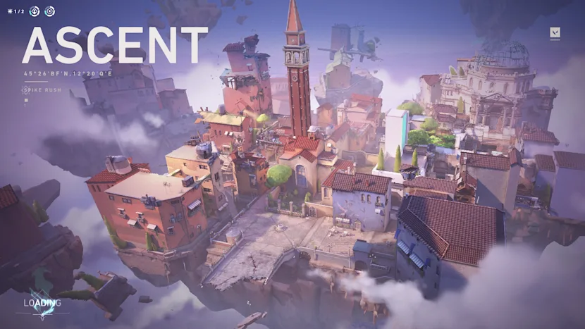

ASCENT

Ascent es el último mapa que llegó a VALORANT. Un escenario ambientado en Venecia y sus canales en el que encontramos una nueva mecánica única: las puertas. Se trata de un mecanismo de doble filo que afecta a atacantes y defensores, volviéndose crucial una vez se planta la bomba. Además de esto, hay muchas otras características especiales que debes conocer si quieres dominar el mapa. En esta guía vamos a tratar de poner las cosas un poco más fáciles.
- Las puertas no son muy sólidas y pueden destruirse: 5 puñaladas son suficientes. Si te fijas, cambian de color según el daño sufrido. Cuanto más rojos sea el tono, más cerca están de romperse. Una vez rotas, quedan destruidas hasta el final de la ronda.
- No es posible bloquear el cierre de una puerta con habilidades. Un jugador tampoco puede bloquear el cierre con su cuerpo. No se cortará, pero se empujará automáticamente de un lado.
- Las puertas hacen ruido. Cuando se destruyen, pero también cuando se cierran y se abren. Presta atención.
- Las puertas tardan unos segundos en cerrarse. Tanto los aliados como los enemigos tienen un poco de tiempo para correr antes de ser bloqueados. Además, cuando se inician la apertura y el cierre, no se pueden cancelar.